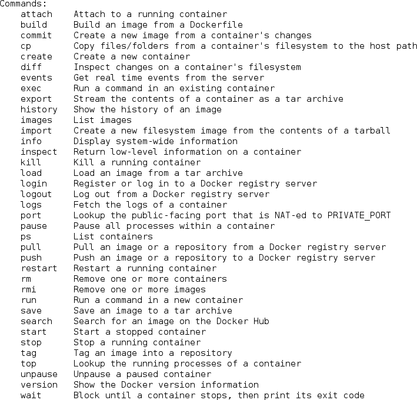
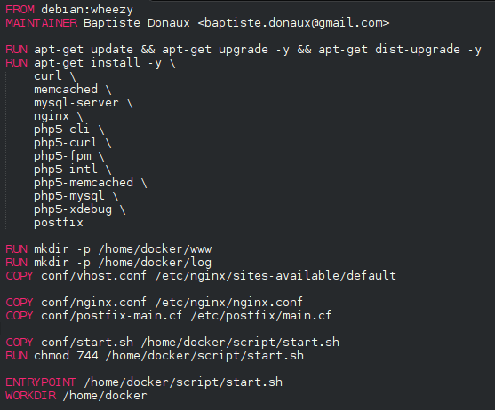
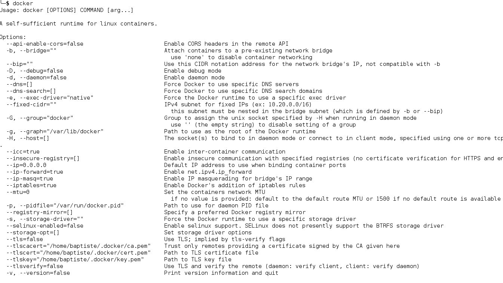
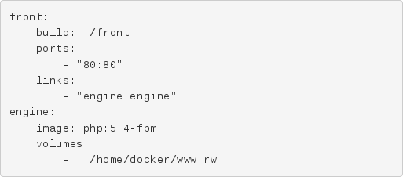

Docker
À la découverte des baleines
Créé par Baptiste Donaux
Baptiste Donaux
- Développeur Symfony chez Wanadev
- www.wanadev.fr
- www.baptiste-donaux.fr
- @baptistedonaux
- baptiste.donaux@gmail.com
- baptistedonaux
Sommaire
- Comprendre une baleine
- Vivre avec une baleine
- Commander une baleine
- Déployer avec une baleine
Comprendre une baleine
Présentation
- Docker est développé par Docker Inc.
- Créé par un français, Solomon Hykes
- Dévoilé en mars 2013
Qu'est-ce que Docker ?
- Une API (RESTFul) haut niveau permettant de coordonner des opérations bas niveau
- Une solution pour isoler des environnements
- Un produit destiné à Linux
- Un produit qui repose sur trois modules
Qu'est-ce que Docker n'est pas ?
- Ce n'est pas une machine virtuelle
- Lourd
Comment fonctionne Docker ?
La technologie repose sur trois composants.
- Le système de container Linux LXC
- cgroups
- Le Kernel Linux
Comment fonctionne Docker ?
Objectif des LXC
LXC signifie Linux Containers.
C'est un système de virtualisation, utilisant l'isolation comme méthode de cloisonnement au niveau du système d'exploitation.
(source : fr.wikipedia.org)
Comment fonctionne Docker ?
cgroups
cgroups (control groups) est une fonctionnalité du noyau Linux pour limiter, compter et isoler l'utilisation des ressources (processeur, mémoire, utilisation disque, etc.).
(source : fr.wikipedia.org)
Comment fonctionne Docker ?
Linux… of course !

Docker pour quel plateforme ?
Docker utilise Linux et ses fonctionnalités. Docker est donc uniquement compatible avec Linux. D'ailleurs il lui est destiné.
Il requiert un Kernel 3.8+. Un fallback a été mis en place pour Debian 7.
Docker pour quel plateforme ?
Pour utiliser Docker sur un Mac ou Windows, vous pouvez utiliser une des VMs mise à disposition comme boot2docker. Celle-ci est soutenu par Docker Inc., repose sur VirtualBox. Elle est très légère (~ 24 Mo) et démarre rapidement (~ 5/10 secondes). Elle embarque un Linux dans lequel vous pourrez ensuite exécuter un nombre illimité de containers.
ATTENTION ! Des problèmes non liés à Docker peuvent être levé par l'utilisation de ces VMs.
Pourquoi utiliser Docker ?
- Unifier les environnements de développement
- Exécuter une application dans un environnement sain
- Travailler dans les conditions similaires à l'environnement final
- Déployer ses applications
Vivre avec une baleine
L'art de vous simplifier la vie
Une API haut niveau permettant de manager des instructions bas niveau
L'art de vous simplifier la vie

Quelques rappels avent de commencer
Docker vous donne la possibilité de gérer :
- des images
- des containers
Quelques rappels avent de commencer
Et un peu de vocabulaire
Mais dans Docker, tout est container ! :-/
Voyez donc plutôt :
- image = modèle de container (statique)
- container = container pouvant vivre et être "exécuté" (dynamique)
Gestion des images
Dans une image, vous allez installer des services, qui seront exécutés dans un autre container de manière à le garder intact.
Gestion des images
Comment récupérer une image ?
Il existe le Docker Hub Registry pour :
- pusher
- puller
- rechercher des images
Dépôt gérer par Docker
Gestion des images
Comment récupérer une image ?
$ docker search --stars=10 debian NAME DESCRIPTION STARS OFFICIAL AUTOMATED debian (Semi) Official Debian base image. 248 [OK] google/debian 25 [OK] tianon/debian use "debian" instead - https://index.docke... 13
$ docker pull debian
$ docker images REPOSITORY TAG IMAGE ID CREATED VIRTUAL SIZE debian 7 f6fab3b798be 4 weeks ago 85.1 MB debian latest f6fab3b798be 4 weeks ago 85.1 MB debian wheezy f6fab3b798be 4 weeks ago 85.1 MB debian 6 1910f8f05f99 4 weeks ago 78.5 MB debian stable 2cf366ad6d47 8 weeks ago 85.19 MB debian 7.5 06af7ad6cff1 5 months ago 85.18 MB
Gestion des images
Comment créer une image ?
Deux méthodes
- Dockerfile : plus conventionnel
- docker-commit : permet de garder un état
Gestion des images
Comment créer une image avec un Dockerfile ?
Fichier contenant des instructions et des méta-datas.
Gestion des images
Comment créer une image avec un Dockerfile ?
Gestion des images
Comment créer une image avec un Dockerfile ?
Et maintenant, on build !
$ docker build .
$ docker imagesPas mal, mais pas de nom à mon image…
$ docker build -t monImage[:monTag] .
Gestion des images
Le cache et la construction d'image
Lorsqu'on rebuild une image, Docker utilise du cache.
Il réutilise les étapes déjà faites qui n'ont pas changées.
Chaque étape (instruction Dockerfile), est mise dans un container.
Lorsque vous rebuildez l'image, Dockerfile repars du dernier container intermédiaire qui n'a pas changée.
Gestion des containers
Un container va vivre et contenir les différences avec l'image de base.
Gestion des containers
Lancer un container
$ docker run debian:wheezy bash
Va s'arrêter immédiatement car la console n'a pas été attachée
$ docker run --tty --interactive debian:wheezy bash
Gestion des containers
Comment fonctionne docker-run ?
$ docker create --tty --interactive debian:wheezy bash
$ docker start name_of_container
Gestion des containers
Comment fonctionne docker-run ?
docker-create va créer un container à partir d'une image et lui donné un nom. Celui-ci sera toujours disponible.
$ docker ps -a # pour voir tous les containers (lancé ou non)
Gestion des containers
Utiliser et ré-utiliser ses containers
Best Practices
$ docker build -t monImage /path/
$ docker create --tty --interactive -p 80:80 --name="containerName" monImage bash
$ docker start containerName
$ docker stop containerName
Pas de perte de données, pas de réinitialisation des données.
Commander une baleine
Prenez le contrôle
Docker, pas 1, mais 2 parties !
- client
- serveur / core ou engine
Prenez le contrôle
Une API RESTFul qui répond à notre docker-cli. Par conséquent, un daemon appelable par n'importe quelle application.
Le serveur contactable via une IP (et un port) ou via une Socket.
tcp://ip:port
unix:///run/docker.sock
Commander une des baleines !
Cela donne la possibilité de gérer un cluster de baleines !
Lancer le core de chaque serveur de manière à écouter sur une plage d'IP et un port.
Possibilité de gérer plusieurs machines depuis un unique point.
docker-cli et une machine distante

Documentation
L'API reprend les commandes détaillés dans les parties précédentes. Elle est disponible sur le site officiel.
Déployer avec une baleine
Déployer avec une baleine
Docker en bref
- Docker permet d'isoler des processus.
- 1 processus par container conseillé
- Associer des containers pour exécuter une application
Déployer avec une baleine
Quels avantages d'éclater son application ?
- Redémarrer un container, redémarre un service et donc un PID
- Un processus qui quitterait d'une manière inopiné pourrait être automatiquement relancé si l'option always a été configurée.
- Le lancement d'un container supplémentaire pour un service donnée permettrait de jouer facilement sur la répartition de charge (load balancor).
- Élasticité de la plateforme.
- Pour du développement, on peut facilement simuler des problèmes de réseau entre deux machines.
Déployer avec une baleine
Quels inconvénients d'éclater son application ?
- Pas toujours facile de construire des containers mono-process pour un projet donné
- Demande une plus grande attention pour les déploiements
Déployer avec une baleine
Exemple
Pour application Symfony standard, on aurait trois containers :- Nginx
- HHVM
- MongoDB
Déployer avec une baleine
Facilitons ces étapes
En novembre 2014, Docker annonce deux vainqueurs de leur hackathlon pour le produit Fig.
Qu'est-ce que Fig ?
Déployer des containers facilement (services) grâce à un unique outil.Déployer avec une baleine
Faciliter les déploiements avec Fig
- Déclaration des services (nom des containers utilisés via Fig) qui compose une application dans un fichier
- Fichier par défaut, fig.yml
Déployer avec une baleine

Exemple de déclaration d'environnement
Déployer avec une baleine
$ fig build engine uses an image, skipping Building front... ---> 1822529acbbf Step 1 : COPY myVhost.conf /etc/nginx/conf.d/default.conf ---> 07e91ba25c16 Removing intermediate container 19eb539844a8 Successfully built 07e91ba25c16
Construit les images à construire. Les services qui utilisent. Les services utilisant des images déjà buildées (Docker Hub) seront téléchargées au moment du démarrage si celles-ci n'existent pas déjà.
Déployer avec une baleine
$ fig up --no-recreate Recreating test_engine_1... Recreating test_front_1... Attaching to test_engine_1, test_front_1 engine_1 | [14-Jan-2015 10:19:21] NOTICE: fpm is running, pid 1 engine_1 | [14-Jan-2015 10:19:21] NOTICE: ready to handle connections
On peut voir les logs des containers pour cet environnement.
L'option --no-recreate est essentiel. Elle permet de lancer les containers utilisés lors de la session précédente.
Déployer avec une baleine
Quel avenir pour Fig
-
Être intégrer dans le client Docker
$ docker compose [build|up|kill|rm|…]
- Fig devient le projet Compose dès sa version 1.1.
- La futur commande sera probablement Crane mais rien n'a été officiellement décidé.
- Devenir un outil central pour Swarm et autres fonctionnalités Docker visant à clusteriser les serveurs.
- Devenir un outil de déploiement en production (limiter le 0 down-time)
End !
Remerciement à David Gageot pour son meetup pour LyonJUG, Jérôme Petazzoni et Docker Inc. pour le passage du Docker Tour à Lyon.
Retrouver les 4 articles qui ont composés cette présentation sur le blog de Wanadev.
Présentation par Baptiste Donaux